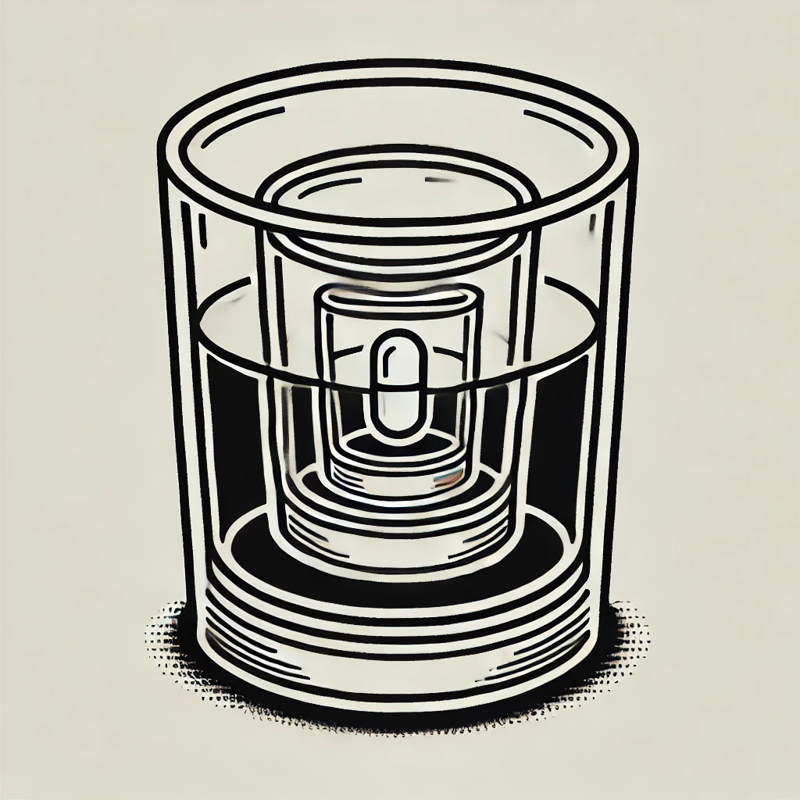
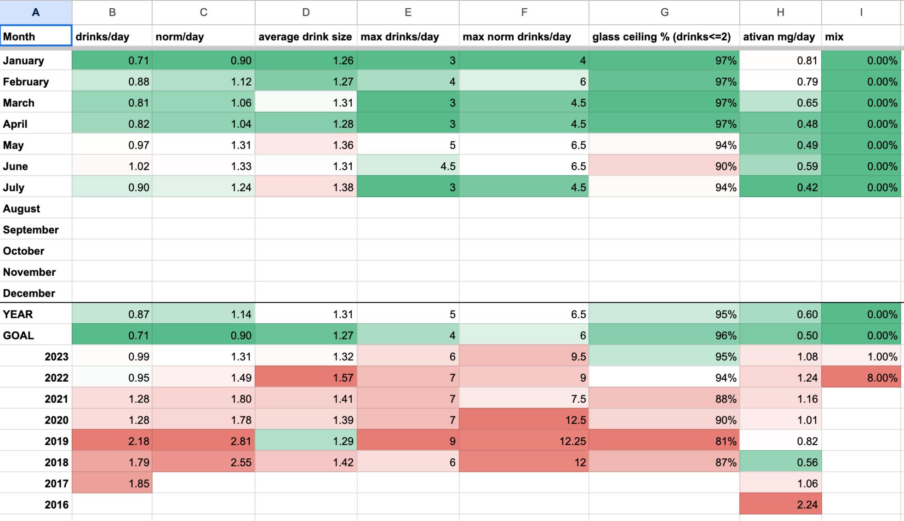
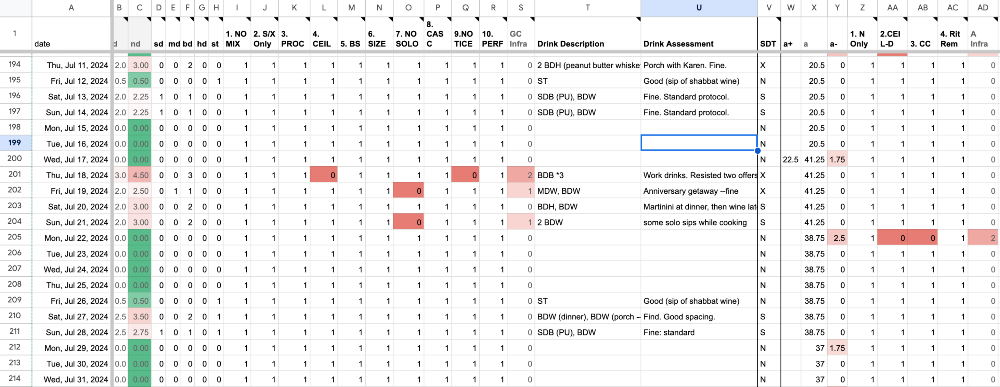

<!DOCTYPE html>

<head>
<meta charset="utf-8"/>
<meta content="width=device-width, initial-scale=1.0" name="viewport"/>
<title>Episode 87: Variable-Height Glass Ceiling</title>
<link rel="stylesheet" href="../../css/style.css" />
<script type="text/javascript">

</script>
</head>
<body>
<div id="main">
<h1><a href="/">Everyday Systems</a>: <a href="../../">Podcast</a> : Episode 87</h1>
<h2>Variable-Height Glass Ceiling</h2>

<iframe class="yt-player" width="100%" height="200" src="https://www.youtube-nocookie.com/embed/T1yWC786bdI?modestbranding=1&rel=0&playsinline=1" title="Everyday Systems Podcast Episode 87" loading="lazy" allow="accelerometer; autoplay; clipboard-write; encrypted-media; gyroscope; picture-in-picture; web-share" referrerpolicy="strict-origin-when-cross-origin" allowfullscreen></iframe>

<p>The reason I have to practice systematic moderation, in other words, the reason I have to concoct all these rules for myself instead of being naturally, instinctively moderate, is simple: <em>my instincts are poor</em>. I want too much: food, alcohol, you name it. If I listened to my appetites, if I practiced intuitive eating, intuitive drinking, intuitive whatever, I would wind up like the prodigal son in the bible, eating the husks of pigs, assuming I survived that long.
</p>
<p>Most appetites, if sufficiently indulged, can kill you. But they tend to do it slowly. It’s unusual to keel over after wolfing down even an entire cheesecake. You generally have to wolf down a lot of cheesecakes over a long period of time. But drinking is different. One excessive episode, one mistake, and then a few inches to the left into oncoming traffic, and you can ruin your life, multiple lives. I thankfully never came close to killing anyone, But I did come close to ruining some of the most important relationships in my life.
</p>
<p>That was before Glass Ceiling, probably the simplest, most unambiguous of all the Everyday Systems, at least <a href="/episode/8/">as I first conceived it</a>: a two-drink-a-day-hard ceiling on the number of alcoholic drinks I am allowed to consume in a day. That was around the same time as I came up with the No S Diet, around 2002, so over 20 years ago.
</p>
<p>That simple, initial version of Glass Ceiling worked very well for me for many years, almost perfectly, in terms of preventing binge drinking. It was that perfect Everyday Systems combination of clarity, simplicity, and a little bit of humor to take off the whips-and-chains edge of the self-discipline. But then two things happened.
</p>
<p>First, I noticed that though I’d stopped binging, I was drinking too much on average. The ceiling had become more like a floor, or at least, also like a floor. I had two drinks pretty much every single day. I rarely went over, but still, <em>every day</em>. And some of those drinks were large. So I was fairly consistently drinking a little too much. That’s better than periodic binging, but still not great. I’d traded a worse problem for a less bad problem, but still a problem.
</p>
<p>And on top of that the science had also changed out from under me: When I started Glass Ceiling, moderate alcohol consumption was supposed to be healthy, resveratrol and all that. Does anyone today even remember resveratrol and all the hype around that? Red wine was practically part of the “Mediterranean diet.” More recently, however, the scientific consensus has shifted: now we are told that any amount of alcohol is bad for you, on a strictly “harm reduction” level (though there are other levels to consider as well, as I’ll discuss in a bit). So I basically woke up one morning to discover that even what I’d been striving for, even moderate drinking is all of a sudden bad for you – and I was pushing the bounds of moderate.
</p>
<p>The other thing that happened is that in 2016 I started taking a prescription anxiety medication, “as needed” for work related stress: lorazepam aka Ativan. In itself, it was incredible. It was magic. A couple of milligrams of Ativan and Asmodeus, that asshole voice in my head, stopped talking. It put him to sleep. I actually started looking forward to stressful meetings because they were an excuse to take a couple of milligrams and turn off his incessant accusatory chatter. And unlike alcohol the Ativan didn’t impair me. In fact, with the fear gone, I felt more capable than I’d been before. It wasn’t just relief, but an actual performance enhancer, because I wasn’t wasting so much of my attention on fear. Asmodeus went to sleep, but the rest of me stayed sharp. If anything, I was sharper than before.
</p>
<p>Ativan is a bit of an old school psychopharmaceutical. These days most people are prescribed more modern benzos like xanax. And that’s what I was initially given. But xanax, for me, functioned more like a general depressant. It put everything to sleep. It made me sluggish. Instead of throbbing with fear I was numb. It’s like I had to trade anxiety for depression, which having now experienced both, I can attest is even worse. With anxiety, by definition, you at least have hope. Fear is a kind of hope. You’re afraid something even worse is going to happen. That implies a hope that it might not, or at least hasn’t yet. Lucky you! With depression, you’re already at the worst, you wish you could imagine a worse to be afraid of but you’re already there. I sometimes wonder whether anxiety isn’t a defense mechanism against depression, something some part of us intentionally concocts to distract from an even worse awful. But that’s a subject for another episode.
</p>
<p>In any case, with Ativan I was spared that. It was almost all upside. It felt like my secret weapon. Sure, I had to be careful to take extra good notes because I would forget a lot more of the details of what happened during those now pleasant and productive meetings, one of the very few side effects I experienced, but I could deal with that – just another habit system. And a couple of times I felt so unthreatened that I actually fell asleep. But beyond that, and everyone probably just attributed it to exhaustion, which was definitely also a factor, no one ever seemed to notice anything. People are always surprised when I confide to them that I am actually a pretty anxious person who lives in constant moral dread of people not laughing at my jokes during zoom meetings and feels the need to resort to this stuff.
</p>
<p>But there were two other problems that were harder to deal with beyond occasionally being insufficiently terrified to remember what happened during a meeting or stay awake during a long round of status reports:
</p>
<p>One, tolerance. I had to be very careful not to take too much or I’d keep needing more to get the same effect. Periodically I’d have to painfully ratchet back down because at some point, even with Ativan, if you take too much, it’ll knock out a rhinoceros.
</p>
<p>And then we come to the side-effect most relevant to this episode: how it mixes with alcohol. Over the years, with Glass Ceiling, I’d developed a very good feeling for the signs that I was approaching intoxication, and could decelerate in time. Plus the ceiling itself, even if my two drinks were large, put a fairly tight lid on anything getting out of hand. But if I had any Ativan in my system, even from many hours before, the effects of even a small amount of alcohol were unpredictable and magnified. And it was uneven, so I wouldn’t necessarily get my anticipated warning signs. Then all of a sudden I’d be impaired, in a weird way, that wasn’t quite like straight up alcoholic intoxication. Nothing too terrible ever happened, but I knew it could, and if I kept this up, inevitably would.
</p>
<p>At first I tried to adjust by just paying more attention, by being more careful, but it’s hard to pay attention when you’re taking two attention depressants, when you’ve got two voices whispering, “relax!” one in each ear.
</p>
<p>So vanilla glass ceiling wasn’t going to be enough anymore. I knew I had to either adjust it or replace it entirely with something else. Because it had worked so well for so many years and was still working to some baseline degree, I didn’t want to throw that foundation away that I’d taken so many years to establish and that had served me so well in such an important way. I knew there would be a great risk in that, too.
</p>
<p>Fortunately, an obvious solution presented itself: a variable-height glass ceiling. I took this other, basic Everyday Systems structure, the idea of N-days and S-days, which I’d pioneered with the No S Diet and also used with Shovelglove and other systems, and applied it to Glass Ceiling. Instead of a constant 2-glass ceiling height, S-days would remain 2, but N-days would be zero. In No-S parlance, alcohol would become an S. So Monday through Friday, no alcoholic drinks; Saturday, Sunday and “special” days, I could have two. It was something so natural I’d considered it years before, just to cut down on routine drinking, but I hadn’t been sufficiently motivated to adopt it. Now that I had the Ativan to worry about in addition to routine, slightly excessive drinking, I had that motivation.
</p>
<p>The beauty of the new system was, because I only ever took Ativan during the week, for work stress, it worked perfectly for avoiding the temptation to mix meds. In fact I came up with a mirror image Ativan ceiling of 2 milligrams on N-days to keep my consumption of that in line (a ceiling which I’ve since lowered) and of course no Ativan on S days to keep mixes from happening then. On one level, I was using one problem to keep the other problem in check, playing my vices against each other.
</p>
<p>Though the primary goal was substance mix avoidance, variable-height glass ceiling also drastically reduced my overall, daily average alcohol consumption. I wasn’t walking on the ceiling anymore. I went from in the neighborhood of 14 drinks in a typical week to 4 drinks.  And, because there were fewer “input opportunities” to monitor and I could spare more attention now for each, variable height glass ceiling helped not just with the average, but with keeping overages limited, the original and still most important goal of Glass Ceiling.
</p>
<p>I was surprised that I was able to switch to a variable height Glass Ceiling without too much pain and suffering. Formerly, I’d really looked forward to having a drink when I got off work, to de-stress, to transition from work-mode into life-mode. It was hard to imagine that giving that up would not be difficult and painful.
</p>
<p>Three things helped to make it a lot easier than I’d feared:
</p>
<p>One, a friend turned me on to the fact that non-alcoholic beer has gotten significantly better in recent years. The technology they use to produce the high-end stuff at least is fundamentally different than it used to be, when they used to just boil everything off, so a lot more of the flavor elements are preserved. I was stunned to find that my body was sufficiently fooled by non-alcoholic beer that I actually felt some relief and it didn’t clamor for more. Between the flavor and the polyphenols and what not and the tiny residual amount of alcohol (so called non-alcoholic beer is allowed to have up to half a percent) even though my mind knew better there were enough Pavlovian associations with the real thing for some of the real pleasures of drinking to come through. Kombucha in wine glasses was similarly helpful for when I was feeling more “Mediterranean.”
</p>
<p>The second thing that helped was tracking. I started making a note of every alcoholic beverage I consumed. On one level, the simple act of counting drinks is a kind of speed bump. But I went beyond that. I tracked the number of drinks, and a rough indication of the size of each drink (four categories, small, medium, large and huge, with medium being a standard drink size and huge a double) on the back of my daily punch cards and transferred this information to my life log spreadsheet weekly, where I also kept track of monthly and then yearly averages, with conditional formatting to make better and worse periods pop out in correspondingly intense shades of green and red. The four size categories have been a good enough approximation to get a handle on what was going without being unsustainably much work.
</p>
<p>My drink counting and rough drink size tracking was helpful not just to get a better sense of what was actually happening, whether I was in fact drinking less and by how much, but as I’ve described in my episode on <a href="/episode/12/">Negative Tracking</a>, it also had a disincentivizing effect because tracking, however efficient, is inherently annoying. It’s work and it’s potentially embarrassing. I had an incentive not to drink because then I would have to do the work of writing it down, and a further incentive not to drink too much because then I would have to write down something potentially embarrassing.
</p>
<p>In fact, tracking, just by itself, provided a kind of a second glass ceiling after the explicit, rule-based one to keep failures contained. It mitigated against the “what the hell effect,” against that dangerous feeling that I could go all out and binge once I’d crossed my two drink threshold because, what the hell, I’d failed anyway. Because each additional drink cost additional embarrassment. It was a higher number to have to write down. And that higher number hurt not just for the day, for that one cell in the spreadsheet, but also in my monthly and yearly aggregate average tracking cells. In three cells (daily, monthly, and yearly), if I wasn’t careful, I could get slapped with an even bolder shade of red. It was like having infinite, concentric glass ceilings.
</p>
<p>In time, I formalized this a bit more, by explicitly making it a goal that I never, no matter what, wanted to see a double glass ceiling violation of more than 4 drinks, and incorporated that prohibition into my recorded mantra that I listen to every day. I’m still working on the total inviolability of that one. I had two double ceiling violations last year, and one this year so far. I am highly motivated to keep it to that one this year, to show some progress, and next year to eliminate it entirely.
</p>
<p>Beyond tracking number and size of drinks, I take notes about any overages and funny stuff. What were the particular situations that caused me to go over the glass ceiling? Did I have a drink that was beyond even “huge” in size, that is, more than a double? Was there some excuse that popped into my head at the time to justify the overage or funny stuff that seemed reasonable in the moment in retrospect now seemed patently absurd? I got a handle not just on when and how much I failed, but how I failed, what the circumstances were. I noticed patterns. Some patterns were so strong that I’d add an additional column in my spreadsheet just to track them and feel an extra little ding of systematic disapprobation when they happened. And it helped. Almost always I’d stamp out those particular sneaky re-routings of my drink-lust. It helped me finally win that game of <a href="https://everydaysystems.com/podcast/episode/67/">whack-a-mole</a> because I came to learn all the places where Demogorgon’s head might pop up and be ready for it (as you may remember from a <a href="https://everydaysystems.com/podcast/episode/52/">previous episode</a>, Demogorgon is how I personify my appetitive self, he’s a great frenemy of Asmodeus).
</p>
<p>Some examples of these whack-a-mole re-routings I started tracking:
</p>
<p>“Size:” did I use one of those enormous wine glasses to drink out of instead of sticking with a moderately sized one?
</p>
<p>“Solo:” Did I take even one solo sip of alcohol without anyone else present, say while cooking? All too often that would lubricate the path to a glass ceiling failure.
</p>
<p> “Bullshit:” Did I catch myself in my internal monologue saying something like “well this drink or this sip doesn’t really count because dot dot dot.”
</p>
<p>Beyond the drink number and size columns, I have ten of these columns now in my lifelog, a sort of drinking performance grading rubric. These days I very rarely get a ding in any of them (I mark an infraction with a 1, which then gets conditionally formatted red), but I keep them around because they’re helpful to prevent backsliding. And it feels good to see those vast tracts of virtuous white in the spreadsheet.
</p>
<p>So what are these numbers telling me? What do they show? I know you can’t wait to see the data. And on the episode transcript page I’ll stick some screenshots from my lifelog to show them in their full glorious, conditionally formatted detail. But I have one more intervention to discuss first that also made a big quantitative difference that I want to explain first. It also made a big qualitative difference in terms of how I’ve been feeling about this whole undertaking.
</p>
<p>The third thing that helped me institute the variable height glass ceiling is that, that same friend who turned me onto the non alcoholic beer and I decided to practice a version of AAs step 5, the “confession” step.
</p>
<p>In case you don’t know it, step 5 of the alcoholics anonymous 12-step program, is that we: “Admit to God, ourselves, and another human being, the exact nature of our wrongs.” The “other human being” part has been the part that I had been missing. The admitting to myself, with great precision, I’d already been doing on my punch cards and lifelog spreadsheet. The admitting to God part I also had no difficulty with – maybe too little difficulty. I guess I figure he’s already seen everything and won’t be especially shocked by anything I could share with him. But another human? Now that’s embarrassing. Not too embarrassing–like it would be to shout it out to the whole world, but the right amount of embarrassing: a friend, one sympathetic friend, with a similar problem, whom I’m helping out in return in the same way.
</p>
<p>So my friend and I, my step 5 accountability partner, my drinking tracking buddy, we’re very concrete about this. We have a shared google sheet drink log that we review together weekly. I copy-paste  from my private lifelog into this shared spreadsheet and he enters his stuff into it directly. We email each other every Monday to alert each other that we’ve made our entries, discuss any funny stuff, and support / gently guilt trip each other into staying on track.
</p>
<p>It’s great because it’s not so lonely anymore, this wrestling with a very private, sometimes embarrassing problem. And the person you’re sharing this with is someone who gets it, because they’re struggling too. It’s almost like a book club. We’re actually also in a book club, going back many years, which is where we got the idea for this, reading Montaigne's essay “On Drunkenness,” which doesn’t contain anything specifically on spreadsheets, and alcohol doesn’t seem to be an issue Montaigne himself had a particular problem with, but it got us talking about it.
</p>
<p>Now, since I’ve brought up AA, you may be wondering, why not take it all the way, why not move to a ceiling of 0 always, why not abstain completely, given how destructive alcohol is in general and has been to you personally? Why not abstinence, instead of moderation?
</p>
<p>Abstinence isn’t just better, according to the latest medical science, but as Nietzsche wrote, it’s also probably easier:
</p>
<p>"It is easier to completely renounce a desire than to keep it in moderation."
</p>
<p>“Es ist leichter eine Begierde ganz zu entsagen, als in ihr mass zu halten."
</p>
<p>The clarity of abstinence is so powerful. Untasted temptations are so much easier to resist than delicious ones already half in your mouth.
</p>
<p>For many people with alcohol problems, or drug problems, or certain other kinds of problems, abstinence may indeed be the best solution, the only viable solution. And I sincerely hope that any of you facing such a problem won’t let Glass Ceiling be a pretext to avoid pursuing the cleaner, clearer, and maybe even easier abstinence you need.
</p>
<p>So why do I, personally, for this problem, persist in pursuing moderation?
</p>
<p>Here is my thinking:
</p>
<p>We might be able to abstain from alcohol, but we can’t abstain from everything that is potentially addictive in our modern world of superabundance. You may have heard the term “obesogenic,” possibly in the phrase “we live in an obesogenic environment.” The idea is that our whole society with its superabundance of cheap, convenient, highly caloric food invites overeating and obesity. But our environment is similarly inviting in terms of many other addictive stimuli. Just as our society is overflowing with superabundant food, we also have superabundant drugs, 50 shades of pornography, smartphones, dings of approval from manipulative social networks, seductively immersive video games. It’s an addictogenic society. And you can’t abstain from everything. Some of these problematic stimuli you can’t really function in society without partaking of to a degree. That safer, easier option of total abstinence just isn’t available. Right? We can’t not use smartphones for example, despite their potential for addiction. If you want a career, for many people, or plan playdates for your kids, you have to at least exist on some social network. And for many of these at least, they also contain some good. They give some pleasure at least, which is good.
</p>
<p>So at least in some spheres, probably in most spheres, you have no choice but to pursue moderation. And so it’s an important skill and temperamental quality to develop. And whenever I can, if I feel there is any benefit to the thing, it’s generally the path I try to go, even if abstinence is an option. Both because I want to exercise moderation, to get better at it in general, and because I think it has the highest reward when successfully applied. I also feel like my special talent and calling as an obscure internet self help personality is to pursue and promote the path of moderation.
</p>
<p>And alcohol, I’m convinced, even though it has been booted from the mediterranean diet, does or at least can have real benefits. I read an interesting book on this subject recently, with a somewhat irritating title: “Drunk: How We Sipped, Danced, and Stumbled Our Way to Civilization,” by Edward Slingerland.
</p>
<p>His thesis is that yes, on a purely medical and “harm reduction” level, alcohol is a bit of a disaster, but that alcohol has other, mostly social, benefits that on a macro and individual level might outweigh this. For one thing, and I found this fascinating, alcohol might have been one of the major factors bringing civilization together. Apparently there’s this “beer before bread” school of anthropology that has some compelling evidence suggesting that humans first got together to grow crops not for food but for beer, and that that is what kicked off agricultural civilization.
</p>
<p>Slingerland writes, “It’s estimated that in ancient Sumer half the grain produced went to making beer. So half of their nutritious crop was being turned into a low-level neurotoxin. It seems a puzzling thing for people to do. Alcohol has all these costs, yet we still use it. The next question is: Could there be benefits that outweigh those costs?”
</p>
<p>And he goes on to give evidence for a bunch of these benefits, involving trust, collaboration, relationship building, creative thinking. One of my favorite examples is a study that shows how patent rates went down in counties in the United States that implemented prohibition vs. counties that didn’t, presumably because the collaborative creativity that alcohol inspired was suddenly removed.
</p>
<p>I don’t have time to get into more examples here, but there’s a great <a href="https://www.thesunmagazine.org/articles/26393-in-vino-veritas">interview with the author in the Sun magazine</a>, that gives a good flavor. See the transcript for the link. If it at all resonates with you, the book is very worth reading. It’s short, there’s also an audiobook version. Again, the point is not that alcohol is not also destructive, but that on a societal and individual level, it can also have real benefits. And maybe, with the right habitual and social safeguards, benefits that outweigh the harms.
</p>
<p>I’m less convinced about the big picture, long term benefits of my “secret weapon,” Ativan (though little picture, it is pretty remarkable). As I mentioned in my episode on <a href="https://everydaysystems.com/podcast/episode/78/">Spider Hunter, a CBT-for anxiety game</a>, Ativan (and to a lesser extent, alcohol too) are crutches that I lean on in socially challenging situations, and by leaning on them I prevent myself, at some point, from getting stronger. Ativan for work social situations, alcohol for “life” social situations. Maybe I’ve needed them sometimes. Maybe I still do. Crutches are useful things, sometimes. But there comes a point at which you’ve got to kick away the crutches if you want to heal 100%. So while I feel pretty good about where I am now with my alcohol variable height glass ceiling, I’m still working on gradually (very gradually) lowering my Ativan ceiling, and hope to get it closer to the complete abstinence end of the spectrum over the next year or two. My current prescription is one sixth of what it was at its height, so I’ve made good progress. Most days, most meetings I don’t need it anymore at all. It’s just once or twice a week, usually.
</p>
<p>I mention all this stuff about the Ativan not because I imagine there are large numbers of people listening who have both an alcohol and an ativan problem they need to manage and balance, but to show how the Glass Ceiling approach can be used to regulate other substances and the interplay between them. Whatever your substances might be in particular, a lot of us are juggling quite a few. Maybe you too could use a ceiling or interlocking ceilings of some kind.
</p>
<p>So what are those numbers I promised you? I’ve already mentioned the ratio of my ativan reduction. In absolute terms it’s gone down from 3 mg a day to half a milligram, prescription level. In terms of alcohol, in terms of simple drink count, I’m down a high of an average of 1.85 glasses a day in 2017 (and a spike of 2.55 in 2019) to .99 last year in 2023 and .89 this year so far. In terms of what I call normalized drinks, standard drink equivalents, my attempt to factor in drink size as well, I’m down from a high of 2.81 to 1.31 in 2023 and 1.13 this year so far. So down over 50% from my high on both measures, with a mostly continuous and sustained slow progress over the last few years at least of the 7 plus years I’ve been tracking. I shudder to think what the reality must have been before I started tracking, or before Glass Ceiling at all, when it must have been much worse. Take a look at the transcript for this episode for screenshots from my lifelog with the conditional formatting.
</p>

<p>Glass ceiling started simple and focused: a single number for a single substance. Now, for me,  it’s two numbers (for N-days and S-days) and two substances (alcohol and Ativan), and a template for even more of each. Plus all the qualitative tracking. Plus the social element of my drinking tracking buddy. I don’t like adding complexity to a system, it is a real cost, but in this case, for me, it was worth it.
</p>
<p>I think I’d hoped that maybe at some point my instincts would be reset sufficiently to the point that I could rely on them again without all this system. I don’t anymore think that will ever be the case, it will always be a battle. But if it’s going to be a battle, these are the lines on which it makes sense to fight. Not so low that I lose my will to defend them at all, and not so high that even victory is meaningless, and defeat can veer all too easily into total disaster.
</p>
<p>I hope that, in one form or another, you find Glass Ceiling, or at least this discussion of it, useful or informative too – or even better, that you have no idea why anyone in the word would need such a thing.
</p>
<p>That’s all for today. Thanks for listening.
</p>

<p>By <a href="mailto:reinhard.engels@gmail.com">Reinhard Engels</a></p>
<p>© 2002-2024  <a href="http://everydaysystems.com">Everyday Systems LLC</a>, All Rights Reserved.<p style="text-align:center"><a href="https://everydaysystems.com/bb/viewtopic.php?t=12675">Discuss</a></p>
 src="/assets/js/year.js?v=2" defer></script>
</body>
